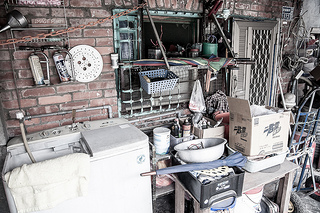

明日から使えるD3.js

@tenten0213


Galleryにあるサンプルは綺麗で参考にはなるのですが、
複雑なのでまずは基礎から見ていきましょう。

$("ul").children(".hoge")
var paragraphs = document.getElementsByTagName("p");
for (var i = 0; i < paragraphs.length; i++) {
var paragraph = paragraphs.item(i);
paragraph.style.setProperty("color", "white", null);
}
d3.selectAll("p").style("color", "white");
楽ちんですね！
Hello! D3.js＼(^o^)／
Hello! D3.js＼(^o^)／
d3.select('#TEXT1').style('background-color', 'black');
Hello! D3.js＼(^o^)／
(๑･ิω･ิ๑)yー～
d3.select('#TEXT2').selectAll('p').style('color', 'red');
⇧に以下のdivタグがいます
d3.select('#appendAndRemove').append('p').text('ｷﾀ━(ﾟ∀ﾟ)━');
d3.select('#appendAndRemove').selectAll('p').node().remove();
リンゴ
オレンジ
バナナ
var fruits = ["Apple", "Orange", "Banana"];
全てのp要素を配列fruitsの内容で上書きする
リンゴ
オレンジ
バナナ
var fruits = ["Apple", "Orange", "Banana"];
var p = d3.select('#fruits').selectAll('p');
p.data(fruits).text(function(d) {return d;});
リンゴ
オレンジ
バナナ
var fruits = ["Apple", "Orange", "Banana", "strowberry"];
p要素の数より配列fruitsの要素数が多いので、多い分は追加する
リンゴ
オレンジ
バナナ
var fruits = ["Apple", "Orange", "Banana", "strowberry"];
var p = d3.select('#fruits').selectAll('p');
var update = p.data(fruits);
var enter = update.enter();
update.text(function(d) {return d;});
enter.append('p').text(function(d) {return d;});
要素がまだ無い場合
var fruits = ["Apple", "Orange", "Banana"];
var li = d3.select('#fruits').selectAll('li');
li.data(fruits).text(function(d) {return d;});